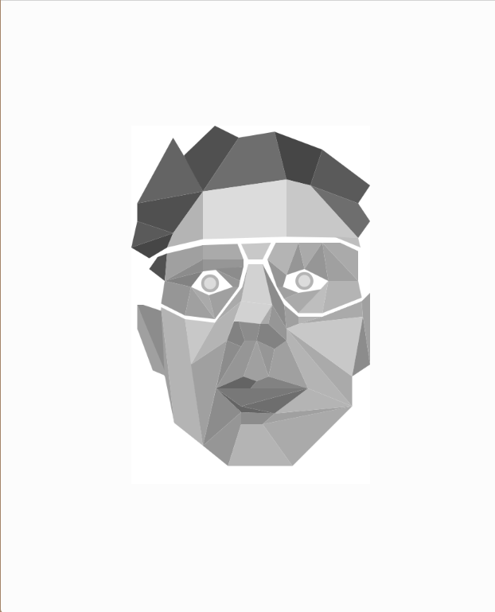
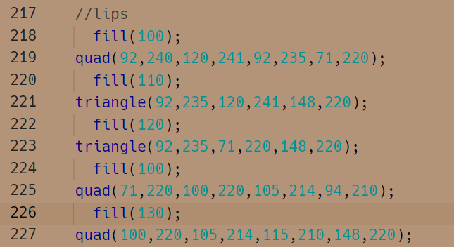
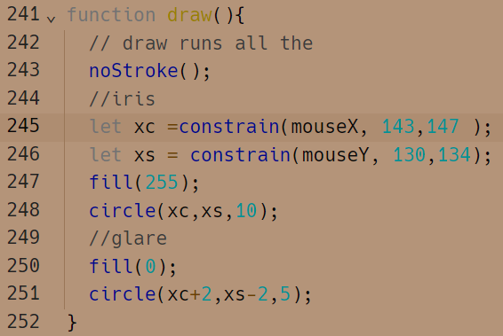

|
|
Portrait mit p5js
Es ging darum, mit p5.js ein Portait zu erstellen.
Bei p5.js handelt es sich um eine Javascriptvariation, also eine Programmiersprache, welche sich auf Grund ihrer Variabilität gut für creative coding und generatives Programmieren eignet.
Ich habe zunächst eine Fotographie als Background meines neuen Projektes gelegt und anschließend näherungsweise die ersten Koordinaten für die modellierung eines Vielecks herausgefunden.
Ausgehend von einem Eckpunkt habe ich das erste Vieleck konstruiert, und mich anschließend an den dabei entstehenden Eckpunkten weiterorientiert.
Inspiriert von Lowpoly habe ich versucht überwiegend mit Dreiecken und Vierecken zu arbeiten.
Die Farbgebung erfolgt orientiert an den Lichtreflexen auf dem Referenzbild.
Durch das Verwenden von verschiedenen Grautönen entsteht eine Illusion von Dreidimensionalität.

Der Code ist nicht sonderlich anspruchsvoll, da es sich hauptsächlich um eingegebene x- und y-Koordinaten handelt.
Die jeweiligen Bildausschnitte habe ich per //Komentar mit in den Code geschrieben, um nicht selber den Überblick zu verlieren.

Des weiteren Habe ich noch versucht es hinzubekommen, dass die Augen dem Cursor der Maus folgen.

|